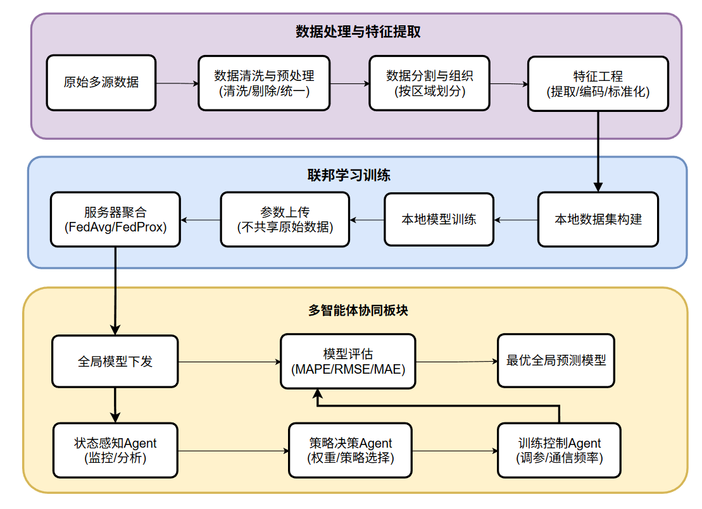
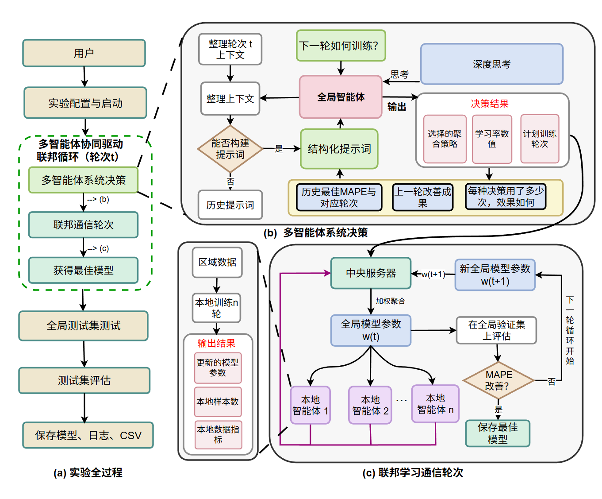

2025 年 9 月 — 2026 年 8 月 · 第一作者
公路工程造价数据分散在不同区域，原始数据的隐私约束限制了集中建模。本项目基于佛罗里达州公路项目数据构建三个客户端的横向联邦学习场景，研究如何在不共享原始数据的前提下，利用多智能体协作支持跨区域造价预测。
将数据处理、本地训练、客户端性能报告与聚合决策串联起来。各客户端独立训练模型并报告训练状态，多智能体根据这些状态动态调整聚合权重，再将聚合后的模型送回客户端进入下一轮训练。


相较 FedAvg，MAPE 降低 6.81%。
演示保留了研究背景、聚合机制、通信流程及早期实验图表。其中实验数值属于历史版本；当前结果以本页及简历中的 6.81% 为准。